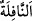
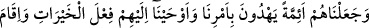
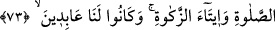

tutmuş vaziyette doğması sebebiyledir.
el-Kamûs’ta şöyle der: “__WORD__; ganîmet, atıyye, nâfileler gibi yapılması vâcib olmadan
yapılan ibâdet ve çocuğun çocuğu anlamlarına gelir.”
“Herbirini” dördünü de hem dînde ve dünyada salâha/iyiliğe muvaffak kılarak “sâlih
insanlar yaptık.” Böylece hepsi, kâmil insanlar oldular.
73. Onları, emrimiz uyarınca doğru yolu gösteren önderler yaptık ve kendilerine
hayırlı işler yapmayı, namaz kılmayı, zekât vermeyi vahyettik. Onlar, daima bize
ibadet eden kimselerdi.
“Onları,” kendilerine “emrimiz” ve peygamber olarak göndermemiz “uyarınca
doğru yolu gösteren” yâni ümmeti hakka götüren, din işlerinde insanların tâbi oldukları
“önderler yaptık.” Böylece onlar insanları kemâle erdiren kimseler oldular. “ve
kendilerine” insanları buna teşvik etmeleri için “hayırlı işler yapmayı,” vahyettik ki
amelin ilme katılmasıyla kemalleri tamam olsun.
Fakir (Bursevî) der ki: “Peygamberler ve ümmetleri mükellefiyetlerde müşterektirler.
Bu sûrenin sonundaki “Gerçekten onlar hayır işlere koşarlardı...” (el-Enbiyâ, 21/90)
âyeti ve Meryem sûresinde Îsâ (a.s.)’dan nakledilen: “Sağ olduğum sürece bana
namaz kılmayı, zekat vermeyi emretti.” (Meryem, 19/31) âyeti de aynı şeyi ifâde eder.
Çünkü peygamberler, kendilerine vahyolunan emirleri yerine getirme konusunda
asıldırlar.
“Namaz kılmayı, zekât vermeyi vahyettik.” Bu cümle, fazîletine işâret olmak üzere
özel olanın genel olana atfı kabilindendir. Yâni daha önce “hayırlı işler” genel anlamda
anılmış, burada da özel olarak o hayırlı işlerden olan namaz ve zekat tekrarlanmıştır.
“Onlar, dâimâ” başkasına değil sâdece “bize ibâdet eden kimselerdi.”
Gönüllerinden, bize ibâdetten başka bir şey geçmezdi.
İbâdet, boyun eğmenin (tezellül) son noktasıdır.
et-Te’vîlâtü’n-Necmiyye’de şöyle der: “O’na İshak’ı verdik” buyruğu, evlâdın kulun
kesbiyle olmadığına Hak vergisi olduğuna işârettir. “Hepsini de sâlih insanlar yaptık”
buyruğu da sâlih olmanın da Hakk’ın vergisi cümlesinden olduğuna işârettir. Hakîkî
mânâda “Sâlihlik”, ilâhî feyzi kabûle fıtraten hüsn-i istîdâd sâhibi olmaktır. “Onları,
emrimizle doğru yolu gösteren önderler yaptık” cümlesi, önderliğin de Allah vergisi
olduğuna, önder olan kimsenin eğer yol gösterme ehliyeti varsa tabîat ve hevâ ile değil,
Allah’ın emri ile yol göstermesi gerektiğine işâret eder.
“Onlara hayırlı işler yapmayı, namaz kılmayı ve zekât vermeyi vahyettik” ifâdesi,
bu muâmelelerin insandan ancak peygamberlere gelen vahiy ve evliyâya bahşedilen